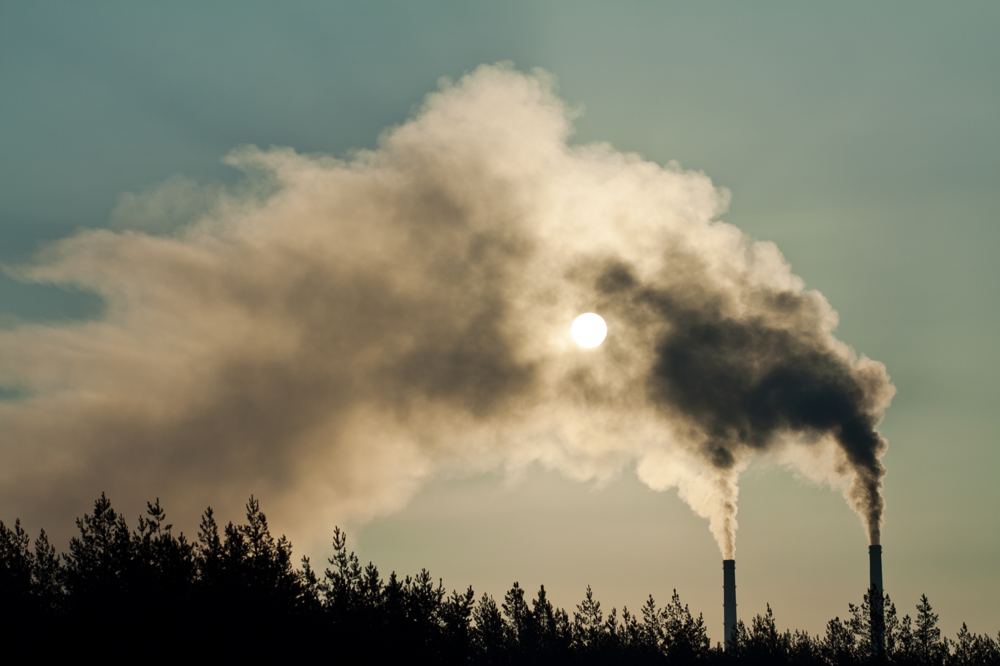

It is difficult to accurately measure the thickness of the atmosphere because, the atmosphere does not end all at once, but it gradually dilutes and eventually disappears.
However, 99 percent of the atmosphere exists at 30 kilometers above the earth’s surface. Although other planets of the solar system have Atmosphere but the atmosphere of Earth is the only one that supports our life.
Atmosphere of Earth can be divided into layers based on its temperature which are layers are the troposphere, the stratosphere, the mesosphere, the thermosphere and at 500 kilometers above the Earth’s surface is called the exosphere.
